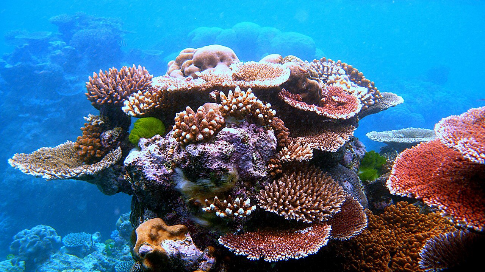
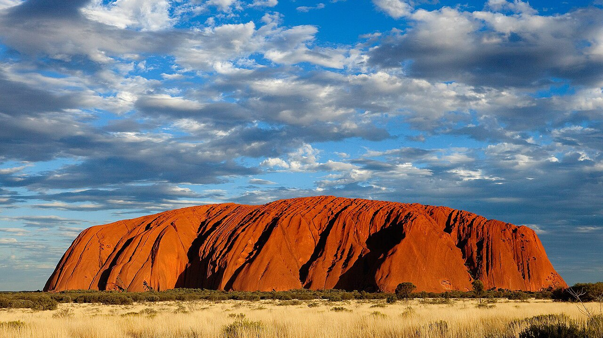
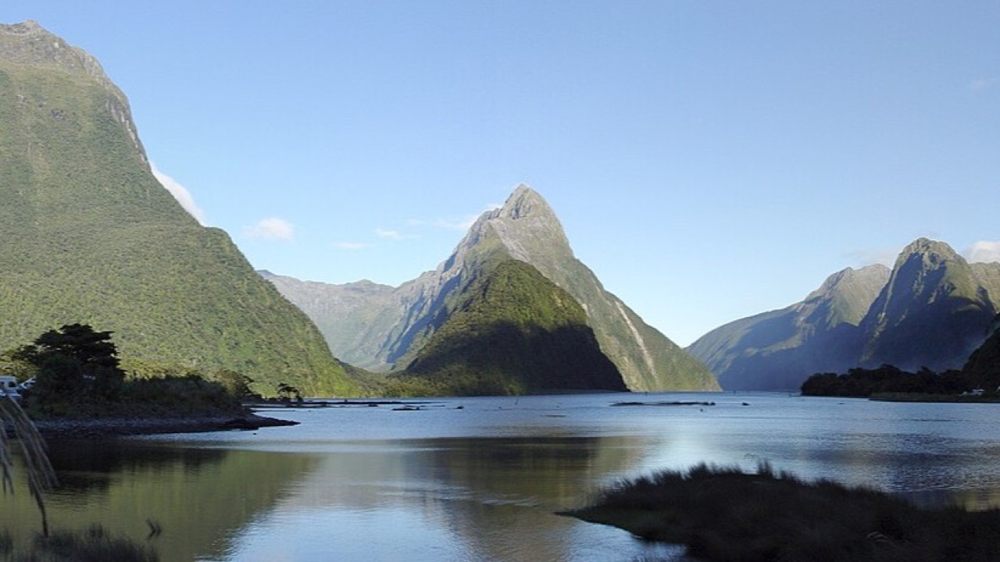

Ecosistemas
Actividad principal, hotel y restaurante recomendados en cada uno
|

Australia
Gran Barrera de CoralEl sistema de arrecifes de coral más grande del mundo, visible desde el espacio.
|

Australia
OutbackDesierto de tierra roja en el centro del país, con la famosa roca Uluru.
|
||||||||||||
|

Nueva Zelanda
Fiordos y Alpes del SurMontañas nevadas, lagos glaciares y fiordos rodeados de selva templada.
|

Polinesia Francesa
Islas del PacíficoIslas volcánicas rodeadas de lagunas turquesa y arrecifes.
|